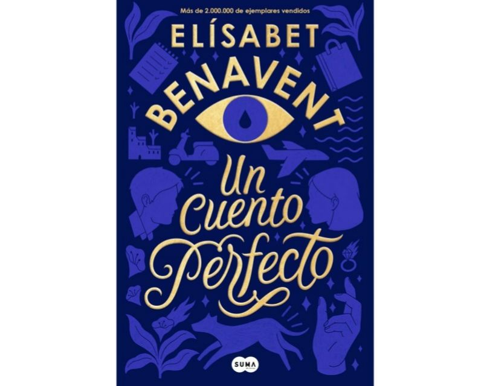
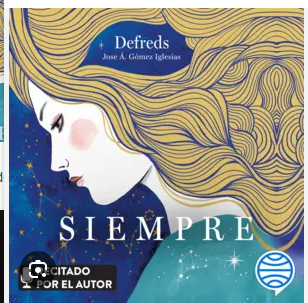
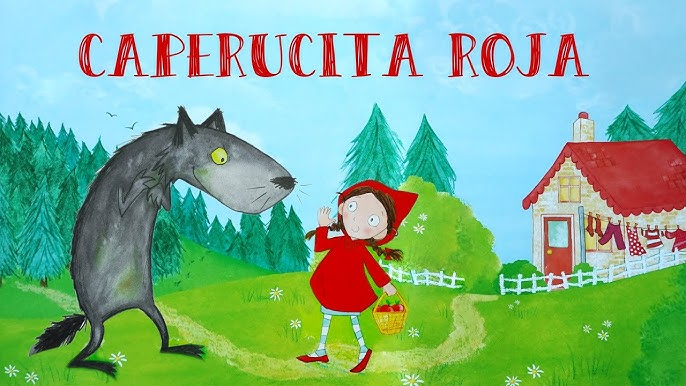

Fecha: 5 de diciembre, 18:00h
Lugar: Sede Vecinal Guanarteme
Sala :1
Bienvenida
Debate sobre el libro
Margot es una mujer que parece tenerlo todo: éxito profesional, dinero, una boda en camino y una vida que cualquiera envidiaría.
Sin embargo, siente un vacío interior y empieza a cuestionarse si realmente es feliz.
Por otro lado, David es un joven que vive con precariedad económica, trabaja en lo que puede y arrastra inseguridades, pero tiene una visión más libre y auténtica de la vida.
Cuando sus caminos se cruzan, ambos descubren que la felicidad no siempre coincide con lo que la sociedad dicta.
A través de su relación, se enfrentan a sus miedos, aprenden a aceptarse y entienden que la plenitud se encuentra en la autenticidad y no en cumplir expectativas externas.

Propuestas de próximos títulos
La Odisea
Siempre

Reseñas
Caperucita Roja
Un cuento clásico que nos recuerda la importancia de la prudencia y la confianza en los consejos de quienes nos cuidan.
Aunque es una narración sencilla, su simbolismo sigue vigente: la curiosidad y la ingenuidad pueden llevarnos a situaciones de riesgo, pero también nos enseñan a crecer y aprender.
Es una historia que, generación tras generación, sigue cautivando tanto a niños como a adultos

1984
Una novela que sigue siendo inquietantemente actual.
Orwell nos presenta un mundo dominado por la vigilancia, la manipulación y la pérdida de libertades individuales.
Leerlo es una experiencia intensa que invita a reflexionar sobre el poder, la verdad y la resistencia.
Es un libro que vale la pena leer porque nos alerta sobre los riesgos de los sistemas totalitarios y la importancia de mantener el pensamiento crítico.
Mensaje inspirador de la escritora Anne Lamott
La importancia de comenzar a escribir sin miedo al fracaso
Próximos eventos
Fecha
Libro
Autor
Lugar
05/12/2025
La Odisea
Homero
Sede Vecinal Guanarteme
19/12/2025
1984
George Orwell
Sede Vecinal Guanarteme
09/01/2026
Cien años de soledad
Gabriel García Márquez
Biblioteca Central
06/02/2026
El Principito
Antoine de Saint-Exupéry
Centro Cultural La Isleta
Tips para disfrutar del Club de Lectura
Redescubre tu lectura favorita
Montar nuestro campamento lector
Lleva siempre tu ejemplar del libro para seguir la lectura.
Subraya o anota frases que te hayan impactado para compartirlas.
Escucha con atención las opiniones de los demás.
No tengas miedo de expresar tu punto de vista, aunque sea diferente.
Respeta los turnos de palabra y evita interrumpir.
Si no pudiste terminar el libro, comparte lo que sí leíste o tus impresiones.
Trae agua o café para estar cómodo durante la reunión.
Participa en la elección de próximos títulos con propuestas variadas.
Apoya a quienes tienen dificultades de lectura con audiolibros o resúmenes.
Disfruta del encuentro como un espacio social y cultural, no solo académico.